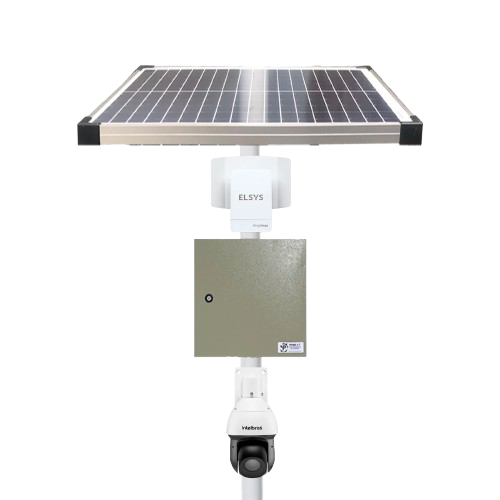

A Intelbras é uma empresa brasileira fundada em 1976, especialista em soluções de tecnologia para segurança, comunicação (TIC) e energia, com foco no aprimoramento da vida das pessoas e empresas através da inovação. A empresa fabrica e distribui um vasto leque de produtos, desde câmeras de segurança e sistemas de telefonia até painéis solares e switches de rede, sendo reconhecida por sua capacidade de adaptação e reinvenção constante. O que a Intelbras faz? Segurança: Desenvolve soluções de segurança eletrônica para residências e empresas, como câmeras de monitoramento, alarmes e sistemas de controle de acesso. Comunicação e Redes (TIC): Oferece produtos e sistemas de telefonia, centrais condominiais, switches de rede, e equipamentos de comunicação que ajudam a conectar pessoas e negócios. Energia: Produz equipamentos para o setor de energia, com destaque para a linha de painéis solares para geração de energia renovável. Como a Intelbras se diferencia? Foco na inovação: A empresa está sempre buscando novas tecnologias e soluções, como o desenvolvimento de câmeras inteligentes e equipamentos para casas conectadas. Presença e abrangência: A Intelbras atua em diferentes segmentos, adaptando suas soluções para diversos públicos, desde o lar do consumidor até grandes projetos. Evolução: A Intelbras tem uma história de sucesso marcada pela reinvenção, o que permitiu sua expansão e crescimento em mercados como o de segurança eletrônica e energia. Em resumo, a Intelbras é uma gigante brasileira da tecnologia que combina segurança, comunicação e energia para oferecer soluções completas e inovadoras, sempre perto da realidade dos seus clientes e parceiros.
localidade da fabrica intelbras